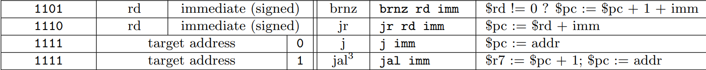
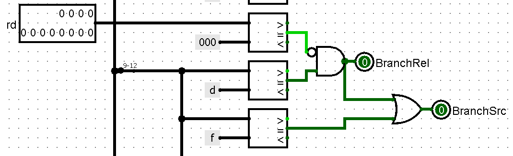
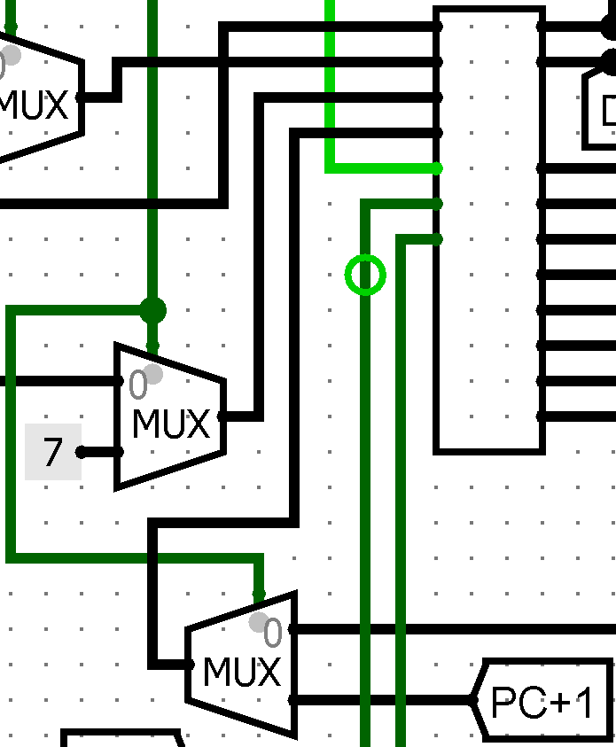
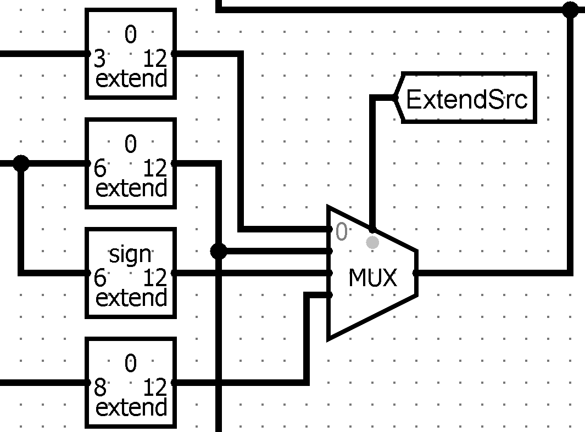

Dit verslag werd opgesteld door:
De oplossing bestaat uit het volgend bestand:
De opbouw van het datapath bouwt voort op het simple datapath uit verslag 5.
Een vereiste voor het datapath, dat nog niet bestond voor de eerdere versie, was dat er een OR immediate, een
load upper immediate en verschillende branch en jump instructions moeten worden geïmplementeerd.
Voor de ori wordt de ALU gebruikt. Voor de lui wordt een multiplexer gebruikt die het resultaat van de ALU overschrijft met her resultaat van de instructie.
Hiervoor is een extra output aan de controller toegevoegd.
De branch en jump instructions zijn iets ingewikkelder en vragen meer uitleg.
De nieuwe branch en jump instructies zien er als volgt uit.

Voor de instructie branch not zero de PC enkel "branchen" als het element in register rd niet gelijk is aan 0. Deze vergelijking gebeurt in de controller. Hiervoor wordt
rd dus geladen en ingebracht in de controller.
Daarna wordt bepaalt of het element dat uit rd is gehaald gelijk is aan 0. De controller krijgt dan een nieuwe output
BranchRel die doorgeeft aan de PC dat deze relatief zal moeten gaan "branchen".

BranchSrc die op deze afbeelding te zien is zal bepalen leter bepalen welke waarde wordt doorgegeven aan de PC.
Voor de jump register wordt de waarde in rd opgeteld met de immediate in de ALU. Deze waarde wordt dan als een absolute jump ingegeven in de PC.
Hier zal de multiplexer BranchSrc (die zojuist al vermeldt is) gebruikt worden.
Deze multiplexer zal bepalen of de waarde die naar de PC wordt doorgegeven rechtstreeks uit de sign-extenders komt of de waarde eerst langs de ALU is geweest.
Voor de jump wordt BranchAbs (Branch Absolute) in de controller aangezet en doorgegevn aan de PC. BranchSrc gaat er dan voor zorgen dat de juiste sign-extend wordt doorgegeven
aan de PC.
Verder zal er niets gebeuren in het datapath.
Bij de jump en link zal hetzelfde gebeuren als bij de normale jump, enkel wordt deze keer de huidige program counter + 1 opgeslagen in register 7. Hiervoor wordt een extra
multiplexer toegevoegd.
Deze multiplexer zal in het geval van een jal instruction de binnenkomende data naar de register file overschrijven met de waarde van de PC.
Een tweede multiplexer zal bit 5-8 van de instructie overschrijven met 111 om zo register 7 als het "write register" aan te duiden.
Deze beide registers worden uiteraard gecontroleerd door de controller en hebben slechts 1 output nodig aangezien ze altijd tesamen zullen werken.

Aangezien er verschillende soorten sign-extend nodig zijn geweest is hiervoor ook een multiplexer gebruikt. Deze ziet er als volgt uit en heeft 4 mogelijke outputs.

ExtendSrc komt opnieuw uit de controller.
Doorheen het project zijn er verschillende inputs en outputs aan de controller toegevoegd. Deze tabel geeft een duidelijk overzicht van elke input of output en zijn functie.
| Input | Functionaliteit |
|---|---|
| Instruction | Wordt gebruikt om de ouputs te berekenen |
| rd | Wordt gebruikt in de branch not zero instructionom te bepalen of de waarde van rd gelijk is aan 0 |
| Ouput | Functionaliteit |
| RegWrite | Bepaalt of er geschreven moet worden in de register file |
| ALUSrc | Bepaalt of de input van de ALU besaat uit rs en rt of uit rs en een extended immediate |
| ALUOp | Bepaalt de ALU operatie die wordt uitgevoerd |
| MemWrite | Bepaalt of er in het geheugen geschreven moet worden |
| Memread/MemToReg | Bepaalt of er uit het geheugen gelezen moet worden en zo ja, overschijft die de output van de ALU met de waarde uit het geheugen |
| ExtendSrc | Bepaalt welke sign extend er gebruikt moet worden |
| ALURslt | Bepaalt of het resultaat van de ALU of van de load upper immediate wordt doorgegeven aan de register file om op te slaan |
| BranchSrc | Geeft de juiste waarde aan de PC in het geval van een branch of jump |
| Brancha | Bepaalt of er een absolute jump moet plaatsvinden |
| Branchr | Bepaalt of er een relatieve branch moet plaatsvinden |
| Halt | Stopt de klok in geval van een arithmetic overflow of een foute instructie |
| PCSave | Bepaalt of er een jump and link moet plaatsvinden en de PC dus moet woren opgeslagen |
| RegDst | Geeft aan dat rd in sommige gevallen geladen moet worden en niet beschreven moet worden |